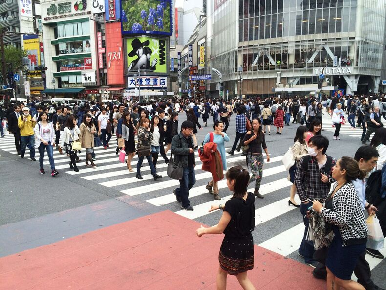
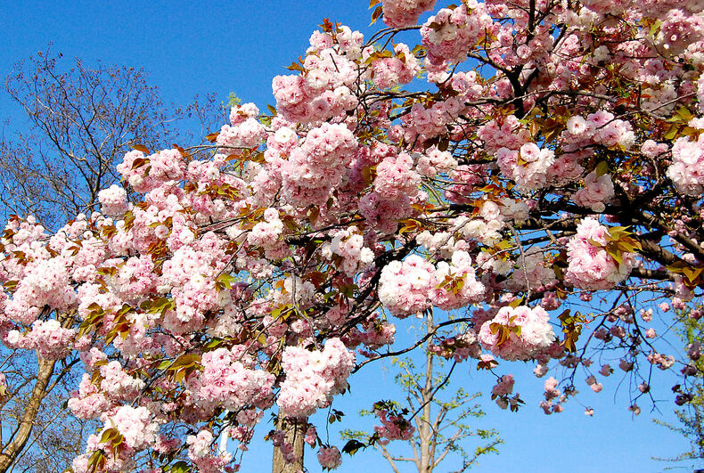
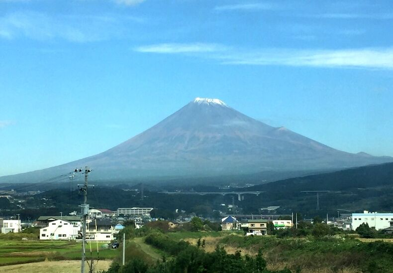
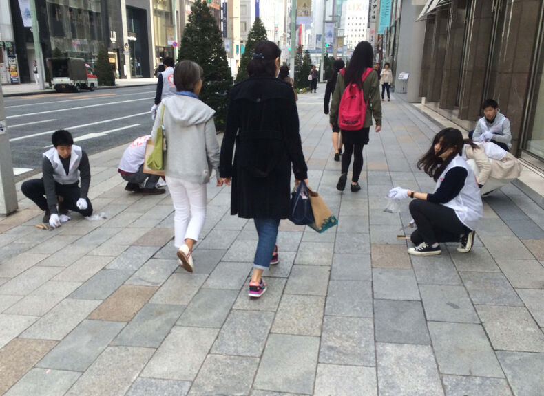

Факты о Японии
Япония — это уникальное азиатское островное государство, история которого насчитывает тысячелетия.
Это особый мир, который превратился в высокоразвитую территорию, сохранив давние традиции. Долгое время Япония была закрытой страной, свободной от внешнего влияния.
Плотность населения

Большая плотность населения
Традиции
Одна из Гейш - в традиционной одежде
Культ природы и сакуры

Японская Сакура
Фудзияма — частная святыня

Гора - Фудзияма
Чистота на улицах

Чистота улиц